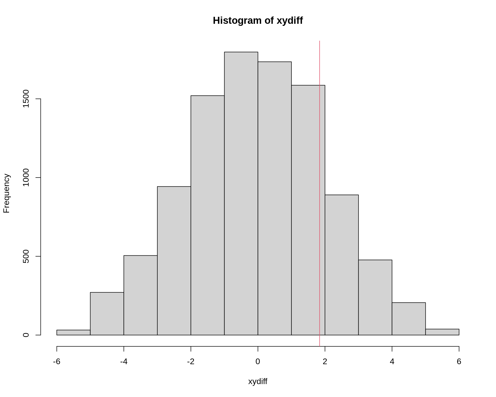
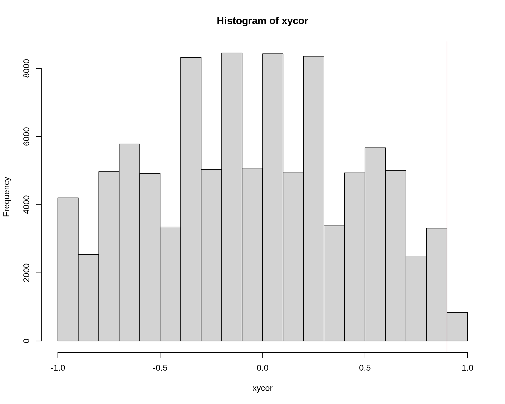
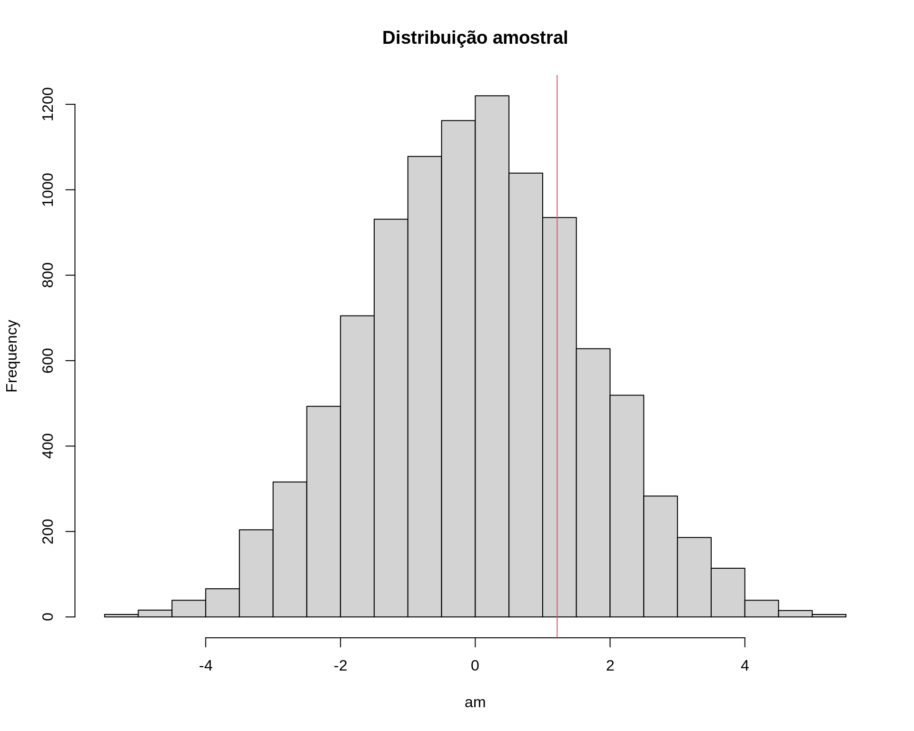
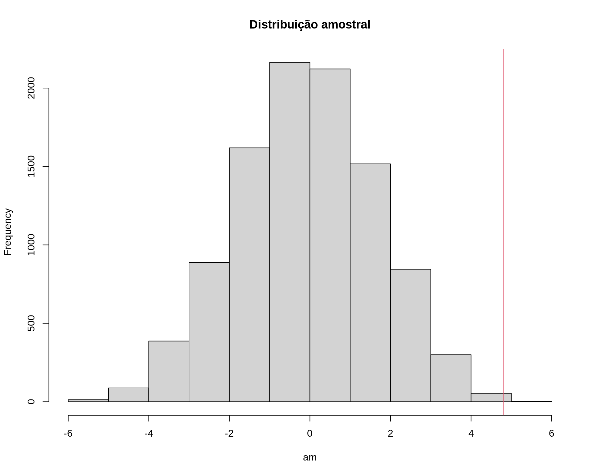

Testes de permutação (ou aleatorização)
Fernando P. Mayer
1 Introdução
Justificativas
- Métodos computacionalmente intensivos para inferência estatística são usados quando as abordagens tradicionais não são adequadas.
- Resultados assintóticos em pequenas amostras.
- Violação de pressupostos.
- Não existência de mecanísmos de inferência específicos.
- Tais métodos se baseiam em reamostragem e/ou simulação.
- Podem ser aplicados em muitos contextos.
Testes de Aleatorização
- Abordagem baseada em permutação das observações (permutation tests).
- São considerados testes livre de distribuição.
- Faz suposições sobre o processo gerador dos dados.
- Duas formas de cálculo da estatística de teste:
- Exaustiva: no conjunto de todos os arranjos possíveis \(\rightarrow\) distribuição amostral exata.
- Por reamostragem: amostra do conjunto completo de arranjos com reamostragem sem reposição.
- IMPORTANTE: Sob a hipótese nula os dados são permutáveis.
- Esse é o principal conceito e requisito dos testes de aleatorização.
Limitações dos testes de aleatorização
- Só podem ser usados para hipóteses que envolvam comparações (trocar observações entre grupos) ou desalinhar registros (como em correlação, por exemplo).
- Portanto, não podem ser usados para testar hipóteses sobre parâmetros individuais.
- O teste de aleatorização exato de Fisher para a média é uma alternativa para testar hipótese sobre a média considerando população simétrica, porém, estritamente não é um teste de aleatorização.
De acordo com Manly (2006):
- Compara o valor da estatística com aquele obtido da distribuição gerada pela permutação dos valores observados.
- São úteis pois permitem o usuário definir a estatística de teste mais apropriada.
- Não necessariamente os resultados podem ser extrapolados para a população.
- Testes de aleatorização são exatos: fonece um nível de significância que é igual ou inferior ao nível nominal.
- Duas estatísticas são equivalente se elas dão o mesmo nível de significância em testes de aleatorização.
- Testes de aleatorização e tradicionais darão similar nível de significância se as suposições do último forem atendidas.
2 Exemplos
2.1 Exemplos simples
2.1.1 Diferença entre médias de dois grupos
## Dados observados
x <- c(4.1, 8.3, 2.9, 10.8, 9.5)
y <- c(3.7, 5.1, 1.0, 7.7, 8.9)
da <- data.frame(vals = c(x, y),
id = rep(c("x", "y"), each = 5))
da
# vals id
# 1 4.1 x
# 2 8.3 x
# 3 2.9 x
# 4 10.8 x
# 5 9.5 x
# 6 3.7 y
# 7 5.1 y
# 8 1.0 y
# 9 7.7 y
# 10 8.9 y
## Compara médias
with(da, tapply(vals, id, mean))
# x y
# 7.12 5.28
(obsdiff <- with(da, abs(diff(tapply(vals, id, mean)))))
# y
# 1.84
## Teste-t tradicional
t.test(vals ~ id, data = da, var.equal = TRUE)
#
# Two Sample t-test
#
# data: vals by id
# t = 0.88051, df = 8, p-value = 0.4043
# alternative hypothesis: true difference in means between group x and group y is not equal to 0
# 95 percent confidence interval:
# -2.978831 6.658831
# sample estimates:
# mean in group x mean in group y
# 7.12 5.28
## Número possível de permutações por grupo
factorial(length(x))
# [1] 120
factorial(length(y))
# [1] 120
## A permutação dentro de cada grupo não faz sentido, pois as médias não
## serão alteradas
xperm <- gtools::permutations(n = length(x), r = length(x), v = x)
str(xperm)
# num [1:120, 1:5] 2.9 2.9 2.9 2.9 2.9 2.9 2.9 2.9 2.9 2.9 ...
sort(x)
# [1] 2.9 4.1 8.3 9.5 10.8
head(xperm)
# [,1] [,2] [,3] [,4] [,5]
# [1,] 2.9 4.1 8.3 9.5 10.8
# [2,] 2.9 4.1 8.3 10.8 9.5
# [3,] 2.9 4.1 9.5 8.3 10.8
# [4,] 2.9 4.1 9.5 10.8 8.3
# [5,] 2.9 4.1 10.8 8.3 9.5
# [6,] 2.9 4.1 10.8 9.5 8.3
tail(xperm)
# [,1] [,2] [,3] [,4] [,5]
# [115,] 10.8 9.5 2.9 4.1 8.3
# [116,] 10.8 9.5 2.9 8.3 4.1
# [117,] 10.8 9.5 4.1 2.9 8.3
# [118,] 10.8 9.5 4.1 8.3 2.9
# [119,] 10.8 9.5 8.3 2.9 4.1
# [120,] 10.8 9.5 8.3 4.1 2.9
yperm <- gtools::permutations(n = length(y), r = length(y), v = y)
str(yperm)
# num [1:120, 1:5] 1 1 1 1 1 1 1 1 1 1 ...
sort(y)
# [1] 1.0 3.7 5.1 7.7 8.9
head(yperm)
# [,1] [,2] [,3] [,4] [,5]
# [1,] 1 3.7 5.1 7.7 8.9
# [2,] 1 3.7 5.1 8.9 7.7
# [3,] 1 3.7 7.7 5.1 8.9
# [4,] 1 3.7 7.7 8.9 5.1
# [5,] 1 3.7 8.9 5.1 7.7
# [6,] 1 3.7 8.9 7.7 5.1
tail(yperm)
# [,1] [,2] [,3] [,4] [,5]
# [115,] 8.9 7.7 1.0 3.7 5.1
# [116,] 8.9 7.7 1.0 5.1 3.7
# [117,] 8.9 7.7 3.7 1.0 5.1
# [118,] 8.9 7.7 3.7 5.1 1.0
# [119,] 8.9 7.7 5.1 1.0 3.7
# [120,] 8.9 7.7 5.1 3.7 1.0
## Diferença entre médias para todas as permutações
xydiff <- numeric(nrow(xperm))
for(i in 1:nrow(xperm)) {
xydiff[i] <- mean(xperm[i, ]) - mean(yperm[i, ])
}
str(xydiff)
# num [1:120] 1.84 1.84 1.84 1.84 1.84 1.84 1.84 1.84 1.84 1.84 ...
summary(xydiff)
# Min. 1st Qu. Median Mean 3rd Qu. Max.
# 1.84 1.84 1.84 1.84 1.84 1.84
## Portanto, a permutação deve ser feita entre os grupos, ou seja,
## alternando todos os valores possíveis entre os dois grupos
xy <- c(x, y)
## Número de permutações
factorial(length(xy))
# [1] 3628800
xyperm <- gtools::permutations(n = length(xy), r = length(xy), v = xy)
str(xyperm)
# num [1:3628800, 1:10] 1 1 1 1 1 1 1 1 1 1 ...
sort(xy)
# [1] 1.0 2.9 3.7 4.1 5.1 7.7 8.3 8.9 9.5 10.8
head(xyperm)
# [,1] [,2] [,3] [,4] [,5] [,6] [,7] [,8] [,9] [,10]
# [1,] 1 2.9 3.7 4.1 5.1 7.7 8.3 8.9 9.5 10.8
# [2,] 1 2.9 3.7 4.1 5.1 7.7 8.3 8.9 10.8 9.5
# [3,] 1 2.9 3.7 4.1 5.1 7.7 8.3 9.5 8.9 10.8
# [4,] 1 2.9 3.7 4.1 5.1 7.7 8.3 9.5 10.8 8.9
# [5,] 1 2.9 3.7 4.1 5.1 7.7 8.3 10.8 8.9 9.5
# [6,] 1 2.9 3.7 4.1 5.1 7.7 8.3 10.8 9.5 8.9
tail(xyperm)
# [,1] [,2] [,3] [,4] [,5] [,6] [,7] [,8] [,9] [,10]
# [3628795,] 10.8 9.5 8.9 8.3 7.7 5.1 4.1 1.0 2.9 3.7
# [3628796,] 10.8 9.5 8.9 8.3 7.7 5.1 4.1 1.0 3.7 2.9
# [3628797,] 10.8 9.5 8.9 8.3 7.7 5.1 4.1 2.9 1.0 3.7
# [3628798,] 10.8 9.5 8.9 8.3 7.7 5.1 4.1 2.9 3.7 1.0
# [3628799,] 10.8 9.5 8.9 8.3 7.7 5.1 4.1 3.7 1.0 2.9
# [3628800,] 10.8 9.5 8.9 8.3 7.7 5.1 4.1 3.7 2.9 1.0
## Calcula a diferença média para todas as permutações possíveis
xydiff <- numeric(nrow(xyperm))
for(i in 1:nrow(xyperm)) {
xydiff[i] <- mean(xyperm[i, 1:5]) - mean(xyperm[i, 6:10])
}
str(xydiff)
# num [1:3628800] -5.68 -5.68 -5.68 -5.68 -5.68 -5.68 -5.68 -5.68 -5.68 -5.68 ...
summary(xydiff)
# Min. 1st Qu. Median Mean 3rd Qu. Max.
# -5.68 -1.45 0.00 0.00 1.45 5.68
hist(xydiff)
abline(v = obsdiff, col = 2)
## P-valor do teste.
2 * sum(xydiff >= obsdiff)/length(xydiff)
# [1] 0.3888889
t.test(vals ~ id, data = da, var.equal = TRUE)$p.value
# [1] 0.404256
## Usando pacotes
library(coin)
# Loading required package: survival
#
# Attaching package: 'survival'
# The following object is masked from 'package:boot':
#
# aml
#
# Attaching package: 'coin'
# The following object is masked _by_ '.GlobalEnv':
#
# alpha
oneway_test(vals ~ factor(id), data = da)
#
# Asymptotic Two-Sample Fisher-Pitman Permutation Test
#
# data: vals by factor(id) (x, y)
# Z = 0.89172, p-value = 0.3725
# alternative hypothesis: true mu is not equal to 0
oneway_test(vals ~ factor(id), data = da,
distribution = approximate(nresample = 10000))
#
# Approximative Two-Sample Fisher-Pitman Permutation Test
#
# data: vals by factor(id) (x, y)
# Z = 0.89172, p-value = 0.3842
# alternative hypothesis: true mu is not equal to 0
library(perm)
permTS(vals ~ id, data = da)
#
# Exact Permutation Test (network algorithm)
#
# data: vals by id
# p-value = 0.3889
# alternative hypothesis: true mean id=x - mean id=y is not equal to 0
# sample estimates:
# mean id=x - mean id=y
# 1.84
## Mesmo em um caso simples como, esse, onde n = 10, já vimos que o
## número total de permutações possíveis pode ser muito grande, o que
## faz com que esse processo fique inviável computacionalmente.
## A ideia então é fazer um grande número de permutações aleatórias e
## fazer o mesmo cálculo. Isso pode ser feito retirando-se amostra COM
## REPOSIÇÃO da amostra conjunta (concatenando os dois grupos)
## Usando amostras sem reposição
N <- 10000
xydiff <- numeric(N)
for(i in 1:N) {
xydiff[i] <- diff(tapply(sample(xy), da$id, mean))
}
str(xydiff)
# num [1:10000] 0.36 1.36 -0.16 -2.96 -1.72 ...
summary(xydiff)
# Min. 1st Qu. Median Mean 3rd Qu. Max.
# -5.6800 -1.4400 0.0000 0.0113 1.4800 5.6800
hist(xydiff)
abline(v = obsdiff, col = 2)
## P-valor do teste.
2 * sum(xydiff >= obsdiff)/length(xydiff)
# [1] 0.396
t.test(vals ~ id, data = da, var.equal = TRUE)$p.value
# [1] 0.404256
coin::oneway_test(vals ~ factor(id), data = da)
#
# Asymptotic Two-Sample Fisher-Pitman Permutation Test
#
# data: vals by factor(id) (x, y)
# Z = 0.89172, p-value = 0.3725
# alternative hypothesis: true mu is not equal to 0
perm::permTS(vals ~ id, data = da)
#
# Exact Permutation Test (network algorithm)
#
# data: vals by id
# p-value = 0.3889
# alternative hypothesis: true mean id=x - mean id=y is not equal to 0
# sample estimates:
# mean id=x - mean id=y
# 1.842.1.2 Teste para correlação
## Usando o mesmo exemplo, mas agora calculando a correlação entre os
## grupos
## Correlação observada. NOTE que é necessário usar a correlação (de
## postos) de Spearman
cor(x, y, method = "pearson")
# [1] 0.9228669
cor(x, y, method = "kendall")
# [1] 0.8
(obscor <- cor(x, y, method = "spearman"))
# [1] 0.9
## Calcula a diferença média para todas as permutações possíveis
xycor <- numeric(nrow(xyperm))
for(i in 1:nrow(xyperm)) {
xycor[i] <- cor(xyperm[i, 1:5], xyperm[i, 6:10],
method = "spearman")
}
str(xycor)
# num [1:3628800] 1 0.9 0.9 0.7 0.7 0.6 0.9 0.8 0.7 0.4 ...
summary(xycor)
# Min. 1st Qu. Median Mean 3rd Qu. Max.
# -1.0 -0.4 0.0 0.0 0.4 1.0
hist(xycor)
abline(v = obscor, col = 2)
## P-valor do teste.
2 * sum(xycor >= obscor)/length(xycor) # teste exato
# [1] 0.08333333
cor.test(x, y, method = "pearson")$p.value
# [1] 0.02541591
cor.test(x, y, method = "kendall")$p.value
# [1] 0.08333333
cor.test(x, y, method = "spearman")$p.value
# [1] 0.08333333
spearman_test(x ~ y,
distribution = approximate(nresample = 10000))
#
# Approximative Spearman Correlation Test
#
# data: x by y
# Z = 1.8, p-value = 0.0833
# alternative hypothesis: true rho is not equal to 0
## Usa amostragem SEM REPOSIÇÃO
N <- 100000
n <- length(xy)
xycor <- numeric(N)
for(i in 1:N) {
ip <- sample(1:n, replace = FALSE)
xp <- xy[ip[1:5]]
yp <- xy[ip[6:10]]
xycor[i] <- cor(xp, yp, method = "spearman")
}
str(xycor)
# num [1:100000] -0.3 0.7 0 -0.8 0.8 -0.1 0.7 -0.5 0.2 -0.1 ...
summary(xycor)
# Min. 1st Qu. Median Mean 3rd Qu. Max.
# -1.000000 -0.400000 0.000000 -0.000821 0.400000 1.000000
hist(xycor)
abline(v = obscor, col = 2)
## P-valor do teste.
2 * sum(xycor >= obscor)/length(xycor) # teste aproximado
# [1] 0.08306
cor.test(x, y, method = "pearson")$p.value
# [1] 0.02541591
cor.test(x, y, method = "kendall")$p.value
# [1] 0.08333333
cor.test(x, y, method = "spearman")$p.value
# [1] 0.08333333
spearman_test(x ~ y,
distribution = approximate(nresample = 10000))
#
# Approximative Spearman Correlation Test
#
# data: x by y
# Z = 1.8, p-value = 0.0811
# alternative hypothesis: true rho is not equal to 02.2 Exemplo aplicado: correlação
data(law, package = "bootstrap")
str(law)
# 'data.frame': 15 obs. of 2 variables:
# $ LSAT: num 576 635 558 578 666 580 555 661 651 605 ...
# $ GPA : num 3.39 3.3 2.81 3.03 3.44 3.07 3 3.43 3.36 3.13 ...
plot(law$LSAT, law$GPA)x <- law$LSAT
y <- law$GPA
(obscor <- cor(x, y, method = "spearman"))
# [1] 0.7964286
## Impossível fazer com todas as permutações
factorial(nrow(law))
# [1] 1.307674e+12
## Usa amostragem SEM REPOSIÇÃO
N <- 1000000
xy <- c(x, y)
n <- length(xy)
xycor <- numeric(N)
for(i in 1:N) {
ip <- sample(1:n, size = n/2, replace = FALSE)
xp <- xy[ip]
yp <- xy[-ip]
xycor[i] <- cor(xp, yp, method = "spearman")
}
str(xycor)
# num [1:1000000] -0.0464 0.0321 -0.175 0.2393 -0.3 ...
summary(xycor)
# Min. 1st Qu. Median Mean 3rd Qu. Max.
# -0.9107143 -0.1857143 0.0000000 -0.0003011 0.1857143 0.9464286
hist(xycor)
abline(v = obscor, col = 2)
## P-valor do teste.
2 * sum(xycor >= obscor)/length(xycor) # teste aproximado
# [1] 0.000618
cor.test(x, y, method = "pearson")$p.value
# [1] 0.000665102
cor.test(x, y, method = "kendall")$p.value
# [1] 0.0005320216
cor.test(x, y, method = "spearman")$p.value
# [1] 0.000607857
spearman_test(x ~ y,
distribution = approximate(nresample = 100000))
#
# Approximative Spearman Correlation Test
#
# data: x by y
# Z = 2.98, p-value = 0.00056
# alternative hypothesis: true rho is not equal to 02.3 Exemplo das aulas anteriores
## Exemplo adaptado de Manly (1997)
## Comparação do comprimento da mandíbula de chacais machos e fêmeas
set.seed(2)
machos <- c(120, 107, 110, 116, 114, 111, 113, 117, 114, 112)
## Simula diferença para as femeas
femeas <- rnorm(10, mean(machos) - 2, sd = sd(machos))
da <- data.frame(comp = c(machos, femeas),
sexo = c(rep("M", 10), rep("F", 10)))
densityplot(~comp, groups = sexo, data = da, auto.key = TRUE)
## Média por sexo
tapply(da$comp, da$sexo, mean)
# F M
# 112.185 113.400
## Diferença das médias
diff(tapply(da$comp, da$sexo, mean))
# M
# 1.214975
## Média de cada sexo
(m1 <- mean(machos))
# [1] 113.4
(m2 <- mean(femeas))
# [1] 112.185
## Diferença entre as médias amostrais
(med.amostral <- m1 - m2)
# [1] 1.214975
## Calcula o desvio padrão ponderado
n1 <- length(machos)
v1 <- var(machos)
n2 <- length(femeas)
v2 <- var(femeas)
(s.pond <- sqrt(((n1 - 1) * v1 + (n2 - 1) * v2)/(n1 + n2 - 2)))
# [1] 3.690024
## Teste de hipótese para
## H0: mu1 <= mu2
## Ha: mu1 > mu2
mu0 <- 0
t.test(x = machos, y = femeas, alternative = "greater",
var.equal = TRUE, mu = mu0)
#
# Two Sample t-test
#
# data: machos and femeas
# t = 0.73625, df = 18, p-value = 0.2355
# alternative hypothesis: true difference in means is greater than 0
# 95 percent confidence interval:
# -1.646627 Inf
# sample estimates:
# mean of x mean of y
# 113.400 112.185
## Estatística de teste
(tcalc <- (m1 - m2)/(s.pond * sqrt(1/n1 + 1/n2)))
# [1] 0.7362465
## Valor crítico
(tcrit <- qt(.025, df = n1 + n2 - 2, lower.tail = FALSE))
# [1] 2.100922
## p-valor
pt(tcalc, df = n1 + n2 - 2, lower.tail = FALSE)
# [1] 0.2355338
## Teste por simulação via _permutação_
N <- 10000
## Se a hipótese nula é verdadeira, então o comprimento das mandíbulas
## de machos e fêmeas são provenientes da mesma poplação, e portanto
## podem ser pensados como uma única amostra.
amostra <- c(machos, femeas)
## Amostra SEM REPOSIÇÃO os 20 valores, e atribui aleatoriamente 10 para
## cada grupo (macho ou fêmea). Se forem de fato da mesma população,
## então as diferenças entre as médias devem ser próximas de zero.
am <- replicate(
N, diff(tapply(sample(amostra, replace = FALSE), da$sexo, mean))
)
## Visualização
hist(am, main = "Distribuição amostral")
abline(v = med.amostral, col = 2)## Exemplo adaptado de Manly (1997)
## Comparação do comprimento da mandíbula de chacais machos e fêmeas
machos <- c(120, 107, 110, 116, 114, 111, 113, 117, 114, 112)
femeas <- c(110, 111, 107, 108, 110, 105, 107, 106, 111, 111)
da <- data.frame(comp = c(machos, femeas),
sexo = c(rep("M", 10), rep("F", 10)))
densityplot(~comp, groups = sexo, data = da, auto.key = TRUE)
## Média por sexo
tapply(da$comp, da$sexo, mean)
# F M
# 108.6 113.4
## Diferença das médias
diff(tapply(da$comp, da$sexo, mean))
# M
# 4.8
## Média de cada sexo
(m1 <- mean(machos))
# [1] 113.4
(m2 <- mean(femeas))
# [1] 108.6
## Diferença entre as médias amostrais
(med.amostral <- m1 - m2)
# [1] 4.8
## Calcula o desvio padrão ponderado
n1 <- length(machos)
v1 <- var(machos)
n2 <- length(femeas)
v2 <- var(femeas)
(s.pond <- sqrt(((n1 - 1) * v1 + (n2 - 1) * v2)/(n1 + n2 - 2)))
# [1] 3.080404
## Teste de hipótese para
## H0: mu1 <= mu2
## Ha: mu1 > mu2
mu0 <- 0
t.test(x = machos, y = femeas, alternative = "greater",
var.equal = TRUE, mu = mu0)
#
# Two Sample t-test
#
# data: machos and femeas
# t = 3.4843, df = 18, p-value = 0.001324
# alternative hypothesis: true difference in means is greater than 0
# 95 percent confidence interval:
# 2.411156 Inf
# sample estimates:
# mean of x mean of y
# 113.4 108.6
## Estatística de teste
(tcalc <- (m1 - m2)/(s.pond * sqrt(1/n1 + 1/n2)))
# [1] 3.484324
## Valor crítico
(tcrit <- qt(.025, df = n1 + n2 - 2, lower.tail = FALSE))
# [1] 2.100922
## p-valor
pt(tcalc, df = n1 + n2 - 2, lower.tail = FALSE)
# [1] 0.001323634
## Teste por simulação via _permutação_
N <- 10000
## Se a hipótese nula é verdadeira, então o comprimento das mandíbulas
## de machos e fêmeas são provenientes da mesma população, e portanto
## podem ser pensados como uma única amostra.
amostra <- c(machos, femeas)
## Amostra SEM REPOSIÇÃO os 20 valores, e atribui aleatoriamente 10 para
## cada grupo (macho ou fêmea). Se forem de fato da mesma população,
## então as diferenças entre as médias devem ser próximas de zero.
am <- replicate(
N, diff(tapply(sample(amostra, replace = FALSE), da$sexo, mean))
)
## Visualização
hist(am, main = "Distribuição amostral")
abline(v = med.amostral, col = 2)
2.4 Índice de Moran (correlação espacial)
O índice de Moran é uma medida que avalia a dependência espacial entre observações, através de uma medida de correlção que considera os “pesos” entre observações vizinhas (mais próximas). Valores em locais mais próximos tendem a influenciar mais do que os valores de locais mais distantes.
O índice (\(I\)) de Moran é calculado por \[ I = \frac{n}{\sum_{i=1}^n (x_i - \bar{x})^2} \frac{\sum_{i=1}^n \sum_{j=1}^n w_{ij}(x_i - \bar{x})(x_j - \bar{x})}{\sum_{i=1}^n \sum_{j=1}^n w_{ij}} \]
## Índice de Moran para medir dependência espacial.
## Coordenadas dos eventos em uma malha regular 8 x 8.
x <- 1:8
y <- 1:8
## Construção da matriz de pesos que determina a vizinhança entre
## observações.
ind <- expand.grid(i = 1:length(x),
j = 1:length(y))
## Função que determina o peso entre duas localizações na malha.
f <- function(i, j) {
u <- min(3, sum(abs(ind[i, ] - ind[j, ])))
w <- c(0, 1, sqrt(1/2), 0)[u + 1]
return(w)
}
## Cria os pesos, matriz (8^2) x (8^2) = 64 x 64.
w <- matrix(0, nrow = nrow(ind), ncol = nrow(ind))
for (i in 1:nrow(ind)) {
for (j in 1:nrow(ind)) {
w[i, j] <- f(i, j)
}
}
## Normaliza.
w <- w/sum(w)
## Gráfico. Valores claros indicam maior peso entre observações.
image(w, asp = 1, col = gray.colors(100))
## Lógica do índica de Moran: correlação entre valores observados e
## média dos vizinhos. Exemplo com valores simulados.
xx <- rnorm(64)
cor(cbind("Valores observados" = xx,
"Média dos vizinhos" = as.vector(xx %*% w)))
# Valores observados Média dos vizinhos
# Valores observados 1.0000000 -0.2233522
# Média dos vizinhos -0.2233522 1.0000000
## Índice de Moran
moran <- function(x, w) {
n <- length(x)
xbar <- mean(x)
dx <- x - xbar
xi <- rep(dx, each = n)
xj <- rep(dx)
xixj <- xi * xj
pm <- matrix(xixj, ncol = n)
pmw <- pm * w
spmw <- sum(pmw)
smw <- sum(w)
sw <- spmw / smw
vr <- n / sum(dx^2)
MI <- vr * sw
return(MI)
}
## Moran para os dados simulados
moran(xx, w)
# [1] -0.05779878
## A ideia do teste de permutação, é trocar de lugar as observações e
## calcular o índice de Moran, mantendo a matriz de pesos fixa. Se não
## houver dependência espacial, então qualquer observação poderia estar
## em qualquer lugar. Com isso, o valor calculado do índice de Moran
## pode ser comparado com a distribuição dos índices de Moran calculados
## para observações permutadas.
## Se o valor observado for extremo, indica que deve haver correlação
## espacial. Se o observado estiver no centro (ou próximo do centro) da
## distribuição, então não há evidências de correlação espacial.
replicate(10, moran(sample(xx), w))
# [1] 0.034023631 -0.032555384 -0.041883483 -0.019790671 0.024932478
# [6] -0.005887561 -0.046625628 0.006277762 0.017167652 0.019192943
## Teste de permutação com saída gráfica.
ppt <- function(z, w, N = 10000, stat, ...) {
## Índice de Moran por reamostragem.
sim <- replicate(N,
moran(sample(z), w))
## Determina o p-valor.
p.value <- mean((all <- c(stat, sim)) >= stat)
## Histograma da distribuição empírica sob H_0.
hist(sim,
sub = paste("p =", round(p.value, 4)),
xlim = range(all),
...)
abline(v = stat, col = "#903030", lty = 3, lwd = 2)
return(p.value)
}
## Observações simuladas.
set.seed(17)
par(mfrow = c(2, 3))
## Dados com dependência espacial --------------------------------------
## Indução de autocorrelação por meio de uma tendência.
z <- matrix(rexp(length(x) * length(y),
outer(x, y^2)),
length(x))
image(log(z), main = "Com dependência")
cor(cbind("Valores observados" = as.vector(z),
"Média dos vizinhos" = as.vector(as.vector(z) %*% w)))
# Valores observados Média dos vizinhos
# Valores observados 1.0000000 0.1335676
# Média dos vizinhos 0.1335676 1.0000000
## Índice de Moran com dados originais.
(stat <- moran(z, w))
# [1] 0.06551254
hist(z)
ppt(z, w, stat = stat, main = "I de Moran", xlab = "I")
# [1] 0.01559844
## Teste usando spdep
spdep::moran.test(z, spdep::mat2listw(w))
#
# Moran I test under randomisation
#
# data: z
# weights: spdep::mat2listw(w)
#
# Moran I statistic standard deviate = 2.7152, p-value = 0.003312
# alternative hypothesis: greater
# sample estimates:
# Moran I statistic Expectation Variance
# 0.0655125441 -0.0158730159 0.0008984441
## De help(moran.test):
## The assumptions underlying the test are sensitive to the form of the
## graph of neighbour relationships and other factors, and results may
## be checked against those of moran.mc permutations
spdep::moran.mc(z, spdep::mat2listw(w), nsim = 10000)
#
# Monte-Carlo simulation of Moran I
#
# data: z
# weights: spdep::mat2listw(w)
# number of simulations + 1: 10001
#
# statistic = 0.065513, observed rank = 9837, p-value = 0.0164
# alternative hypothesis: greater
## Dados sem dependência espacial --------------------------------------
## Geração de de um conjunto de dados sob hipótese nula.
z <- matrix(rnorm(length(x) * length(y), 0, 1/2), length(x))
image(z, main = "Sem dependência")
cor(cbind("Valores observados" = as.vector(z),
"Média dos vizinhos" = as.vector(as.vector(z) %*% w)))
# Valores observados Média dos vizinhos
# Valores observados 1.00000000 -0.04208797
# Média dos vizinhos -0.04208797 1.00000000
# Índice de Moran com dados originais.
(stat <- moran(z, w))
# [1] -0.008995086
hist(z)
ppt(z, w, stat = stat, main = "I de Moran", xlab = "I")
# [1] 0.4111589
par(mfrow = c(1, 1))
## Teste usando spdep
spdep::moran.test(z, spdep::mat2listw(w))
#
# Moran I test under randomisation
#
# data: z
# weights: spdep::mat2listw(w)
#
# Moran I statistic standard deviate = 0.12925, p-value = 0.4486
# alternative hypothesis: greater
# sample estimates:
# Moran I statistic Expectation Variance
# -0.008995086 -0.015873016 0.002831704
spdep::moran.mc(z, spdep::mat2listw(w), nsim = 10000)
#
# Monte-Carlo simulation of Moran I
#
# data: z
# weights: spdep::mat2listw(w)
# number of simulations + 1: 10001
#
# statistic = -0.0089951, observed rank = 5846, p-value = 0.4155
# alternative hypothesis: greater

Este conteúdo está disponível por meio da Licença Creative Commons 4.0